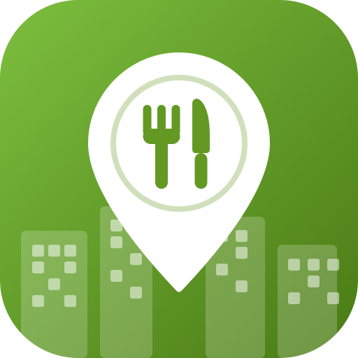

Good food shouldn't hit the bin.
Free iOS app · in betaSparePlate was created to reduce food waste at office events. Too often, perfectly good catering and leftovers end up in the bin simply because nobody nearby knew they were there.
We strongly believe good food should never go to waste — it should find a colleague instead.
Questions, feedback, or something not working? Open an issue on our GitHub page and we'll get back to you.
SparePlate is free to use. If it saved you a lunch, you can buy us a coffee — 10% of every contribution is donated to childfoundation.org.